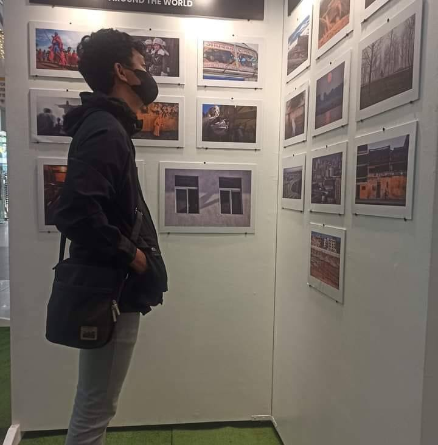

Jim Roger Lorenzo
I'm a passionate and creative individual who finds joy in the world of words. My name is Jim Roger Lorenzo, and I am on a constant journey of self-discovery and exploration. I thrive on challenges that allow me to think critically and problem-solve. I have a deep love for learning and I'm always eager to expand my knowledge in various domains. Whether it's diving into the intricacies of technology, exploring the realms of literature, or unraveling the mysteries of science, I embrace the opportunity to broaden my horizons.
Nicko Torres
Hi, I'm Nicko Torres, a passionate I'm going to become the best Inventor. I have a strong background in computer, programming language, and also experties in Microsoft app, and I'm dedicated to Finish my study. In my free time, I enjoy playing online games, outdoor games, and also sports. I believe in god that he can save us in many ways, and I'm constantly seeking opportunities for growth and learning. Whether it's another programming language and more.
Kale Anne Espera
"I would describe myself as someone who is highly motivated and also I'm a people person."
Carlo Joao Abihay
My name is Joao Carlo Abihay, Im 21 years old, I lived in barangay looc mahogany villas. My hobby in life is playing computer games like Dota, i also play physical games like basketball at badminton.
Joyce Abadilla
I am an introvert. My hobby is playing online games. At the age of 19, I earn through social media marketing. I would describe myself as a pretty and skinny person with goals in life.

Student Online Attendance Web
Welcome to our comprehensive Student Attendance Management System, a sophisticated yet user-friendly solution tailored for educational institutions. This system empowers educators and administrators to effortlessly track and manage student attendance, fostering a more efficient and organized learning environment.
Key Features:
- Real-time Attendance Tracking: Experience the convenience of real-time attendance tracking for both online classes and laboratory sessions. Instructors can mark attendance with a simple click, providing instant insights into student participation.
- Dynamic Class Selection: Choose the class type (Online or Laboratory) and specific sections effortlessly. The system adapts to various class structures, ensuring flexibility in attendance management across diverse courses.
- Individualized Student Records: Each student is presented with a dedicated profile, showcasing their attendance history. The interactive interface allows instructors to promptly update and review attendance records with ease.
- Responsive Design for Any Device: Our system boasts a responsive design, guaranteeing seamless accessibility across devices. Whether you're using a desktop computer, tablet, or smartphone, you can manage attendance on-the-go.
- Aesthetically Pleasing Environment: The background customization not only adds aesthetic appeal but also contributes to a positive and engaging atmosphere for both educators and students.
- Exportable Attendance Reports: Instructors can export attendance data in various formats, facilitating comprehensive record-keeping, analysis, and reporting. This feature ensures compliance with institutional requirements and enhances administrative processes.
Sidebar Navigation:
- Home: Quick access to the main landing page.
- My Class: Access detailed information about your class, including attendance records and course materials.
- Export: Easily export attendance data for further analysis or reporting.
- About Us: Learn more about our Student Attendance Management System and the team behind it.
Whether you're an instructor focused on class management or a student eager to stay on top of attendance, our Student Attendance Management System is designed to elevate the educational experience through smart, accessible, and user-centric solutions. Experience a new level of efficiency in attendance tracking and academic administration!